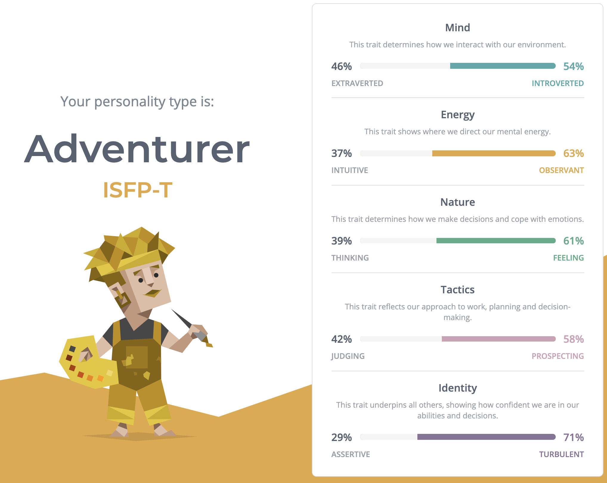
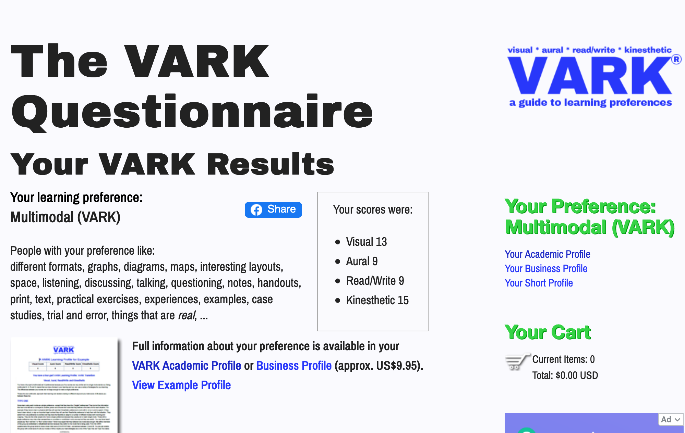
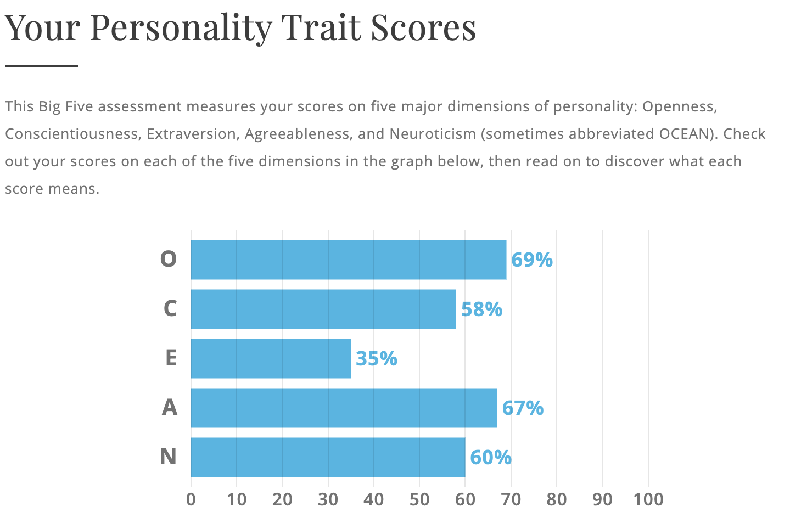

Hi! My name is Eenu. Welcome to the page I have created as a part of my assessment for ‘Introduction to Information Technology’ with RMIT/Open Universities Australia. A little bit about myself: I live in Melbourne, previously studied a science degree majoring in microbiology (which is relevant to the project idea described below), and in my spare time I like to read, watch episodes of ‘Air Crash Investigation’ and think about how one day I would like to own a wall sized aquarium full of colourful fish. My contact details: student number s3858815, email s3858815@student.rmit.edu.au.
My interest in Information Technology (IT) started with the ‘big data’/data science boom and continued to grow when I was in the workplace and saw how technology could be applied to provide solutions to problems and make processes more efficient. When I was fortunate enough to work on a project involving iApply and saw more glimpses of how applications and programs work behind the scenes, I found it really interesting and decided to finally start learning. I enrolled through RMIT as I felt I would receive an education that is practical and orientated towards being ready for the workplace. At the moment, I’d like to learn about programming, development and testing, and hoping for an IT career where I can problem-solve, analyse and keep learning.
Please hover the mouse over the job advertisement to make it bigger, or use the link to view it on SEEK.
This position is an entry-level opportunity for university graduates with a relevant degree. The main responsibility of the Analyst is to support the business by ensuring the everyday IT applications are working properly, and to fix and raise any related issues. This role has caught my interest as it involves problem-solving, assisting others, and hints that there will be opportunities to learn new technology, be involved in side-projects and grow with the business.
To be successful in securing this position, the applicant would need a Bachelor degree qualification in a relevant discipline IT discipline. They would also need to understand SQL (Standard Query Language), have basic knowledge of an Object-Orientated Programming language (such as Ruby, Java, Python, C++) (Rouse 2020) and exposure to some web applications.
It is also ideal, but not essential, for the applicant to have had experience with a ticketing system (either HPSC or Service Now), and an ITIL v3 Foundation certification. As this role is entry-level, having years of relevant experience is not mandatory.
Technical skills and qualifications are not the only requirements of this position. The applicant should also make sure they can demonstrate soft skills such as problem-solving, critical thinking, teamwork and the ability to communicate effectively (written and verbally).
How much of the criteria do I meet for this position? Only the soft skills, as I use these skills in my current workplace on a daily basis. To meet the all the requirements of this role, I would need to successfully complete a relevant degree (like a Bachelor of Information Technology) ensuring along the course of the degree that I chose units that allow me to learn a programming language, web and computer applications and some systems administration. It may also be a good idea to take short online courses about SQL, a programming language, or if possible, create a portfolio that demonstrates an understanding of these to an employer. To standout for this role, it would be a good idea to obtain an ITIL v3 Foundation certification.
For my personal profile, I completed the three tests and received the below results:
Myers-Briggs Type Indicator (MBTI) Test from 16Personalities
Learning Style test from VARK Limited
Big Five Personality Test from Truity
I agree with VARK learning styles test result that I am a multimodal learner; I feel I learn best when I can visualise, and where possible, try whatever I am learning myself (Vark Limited 2020). I think the Big Five Personality test and MBTI test both indicate that I am someone who is more introverted than extraverted, and agreeable (16Personalities 2020; Truity 2020). The MBTI test also explains the people with my test result may perform better in changing environments, rather than rigid environments with a lot of micromanaging, and that long-term planning is not a strength (16Personalities 2020). I think this means I may clash with personalities in a team that favour very detailed, step-by-step approach to planning, however, ultimately, when forming a team, having someone with this approach would be beneficial, just as having someone like myself who is more adaptable.
Microbiology is the study of microorganisms (also known as microbes), such as bacteria, viruses and fungi. While they are too small to see unaided, they have a big involvement in our everyday lives (Willey & Sherwood & Woolverton 2011). I would like to draw more attention to these microorganisms by building a mobile application that creates an engaging, educational experience for the user.
I majored in microbiology in my previous degree, and I think it is a very interesting field with real-life applications. Some microbes are of benefit to our lives – they play a role in balancing the ecosystem, are used to make food products like cheese and bread, to help create vaccines, antibiotics and other medicinal products. Some microbes are even of benefit to human health, helping digest food, synthesise vitamins and assist in the development of the immune system, while other microbes have the potential to cause disease (Willey & Sherwood & Woolverton 2011).
Apart from educating the user of how microbes are applied in everyday life, the application can also be used as a trusted source of facts to promote public health and discredit myths that can be harmful. For instance, the world is currently in the midst of a pandemic caused by an outbreak of coronavirus disease (COVID-19), and misinformation spreading online about how to protect yourself includes taking very hot water baths (can cause burns), spraying the body with alcohol or chlorine (can harm eyes, mouth) and consuming certain antibiotics (these are ineffective against the virus and should only be used when prescribed by a doctor) (World Health Organisation 2020a; World Health Organisation 2020b).
The presentation of the above concepts in the mobile application needs to be engaging; otherwise it will be no different to looking at information in a textbook. To do this, application should include the following features, and they should be triggered by particular locations the user visits, or by events happening in the real world.
Games: For instance, when passing by eateries, the user may receive an alert that there’s a new game available. This game could be set a restaurant, where they are presented with the scenario that lately there have been a string of food poisoning cases. The user would then need to identify the potential sources of contamination were, and as they play, would learn how to prepare food safely.
Videos and fun facts: When the user has the application open on their mobile phone, and is viewing the supermarket shelves through the application, there should be the opportunity to view interesting videos and facts related to certain products. For instance, the dairy section of the supermarket would be ideal for videos on the role of bacteria in cheese production, and the importance of the pasteurisation of milk.
Interactive quizzes: Right before the arrival of flu season, the user could be given the option of completing an interactive quiz, where they are presented with flu facts and myths to distinguish between. At the end of the quiz, there could be an option to view places nearby offering the flu vaccine and extra informative videos.
Journey marker/progression/levels: The application should show how many games or activities there are to complete to create a sense of progress and achievement for the user. Once you’ve unlocked a game or activity, the user can replay them. When new games and activities are introduced, the user could receive clues to what they are related to, and what they might have to do to unlock them (point at a car or a petrol station and the user gets a game relating to biofuels).
The language in the application where possible will be simple, and not assume prior knowledge of these concepts, as the ideal user is anyone who is interested in learning more about the microbes in the world around them.
To achieve this goal, the mobile application will need to make use of the technology augmented reality (AR). Augmented reality technology has existed since the 1990s and is when information is added to the reality we already see in real-time (Emspak 2018; Interaction Design Foundation 2019; Marr 2018). It is different to virtual reality, where a new environment is created with no reference to the reality we experience (Emspak 2018).
A very popular example, and inspiration for this project is the augmented reality mobile application game Pokémon GO, created by Niantic. In Pokémon GO, the user’s character is a trainer, and as the user walks, the trainer walks. When the user views their mobile phone screen, they see Pokémon in the real world, which they as the trainer, can interact with using the mobile application.
The platform behind Pokémon GO, responsible for the overlay of technology over the real world, the Niantic Real World Platform, is available on an exclusive basis to third party developers (Niantic 2018; Statt 2018). Important hardware components required for Pokémon GO to function, which may also be important for this project, and are make up a smartphone include a display, processor, wireless sensor, GPS and compass (Interaction Design Foundation 2019).
If this project is successful, this application will create an enjoyable experience for the user that is also educational, and delivers important information about public health.